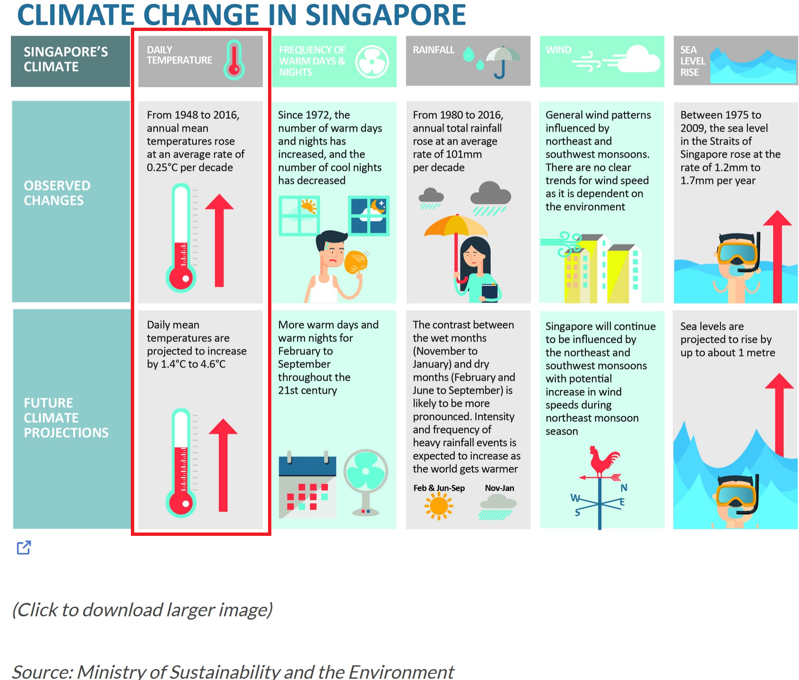
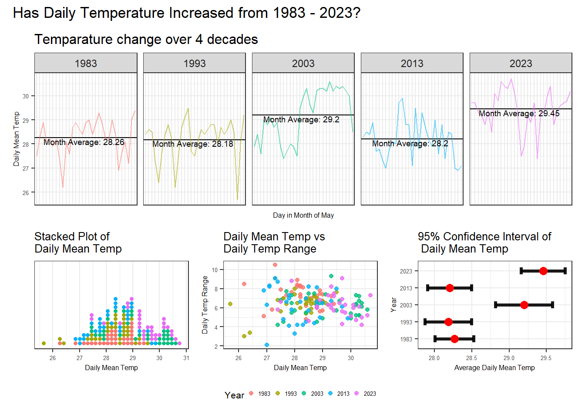

Show code
pacman::p_load(tidyverse, patchwork, DT, plotly, ggiraph, gifski, gganimate, ggthemes, knitr, ungeviz, crosstalk, manipulateWidget)Take-home Exercise 3
Singapore has undertaken three National Climate Change Studies to better understand the potential impact of climate change on the country. A report from the study documented the following findings on the possible impact of climate change in Singapore:

In this take-home exercise, we will explore the impact of climate change on daily temperature, boxed-up in red in the diagram above, in Singapore by applying interactive techniques to enhance the user experience in data discovery and/or visual story-telling. In doing so, we will use visual interactivity and visualising uncertainty methods to validate these claims:
The data used in this study are the historical daily temperature data obtained from the Meteorological Service Singapore website. The daily temperature records of the years 1983, 1993, 2003, 2013 and 2023 for Changi weather station are downloaded and used in this study to create an analytics-driven data visualisation.
The pacman::p_load() function is used to install and load the required R packages into the R environment, as below.
pacman::p_load(tidyverse, patchwork, DT, plotly, ggiraph, gifski, gganimate, ggthemes, knitr, ungeviz, crosstalk, manipulateWidget)The code chunk below does the following:
colnames = c("Station", "Year", "Month", "Day", "Daily_Rainfall_mm", "Highest_30_Min_Rainfall_mm", "Highest_60_Min_Rainfall_mm", "Highest_120_Min_Rainfall_mm", "Mean_Temp_celcius", "Max_Temp_celcius", "Min_Temp_celcius", "Mean_Wind_Speed_km/h", "Max_Wind_Speed_km/h")
weather_data <- list.files(path = "./data/",
pattern = "\\.csv$",
full.names = T) %>%
map_df(~read.csv(.,header = F, col.names=colnames)) %>%
filter(grepl('Changi', Station)) %>%
select(c("Station", "Year", "Month", "Day", "Mean_Temp_celcius", "Max_Temp_celcius", "Min_Temp_celcius")) %>%
mutate(Mean_Temp_celcius = as.numeric(Mean_Temp_celcius),
Max_Temp_celcius = as.numeric(Max_Temp_celcius),
Min_Temp_celcius = as.numeric(Min_Temp_celcius),
Year = factor(Year, levels = c('1983', '1993', '2003', '2013', '2023')),
Month = factor(Month, levels = 1:12),
Day = factor(Day, levels = 1:31),
Date = paste0(Year, '-', Month, '-', Day))Below code chunks detail initial observations and summary statistics relating to the weather data.
kable(head(weather_data, 10))| Station | Year | Month | Day | Mean_Temp_celcius | Max_Temp_celcius | Min_Temp_celcius | Date |
|---|---|---|---|---|---|---|---|
| Changi | 1983 | 1 | 1 | 26.5 | 28.7 | 25.1 | 1983-1-1 |
| Changi | 1983 | 1 | 2 | 26.8 | 30.6 | 24.8 | 1983-1-2 |
| Changi | 1983 | 1 | 3 | 27.0 | 31.3 | 24.5 | 1983-1-3 |
| Changi | 1983 | 1 | 4 | 27.3 | 30.8 | 25.0 | 1983-1-4 |
| Changi | 1983 | 1 | 5 | 27.1 | 31.8 | 23.7 | 1983-1-5 |
| Changi | 1983 | 1 | 6 | 27.2 | 32.1 | 23.7 | 1983-1-6 |
| Changi | 1983 | 1 | 7 | 26.1 | 31.1 | 24.3 | 1983-1-7 |
| Changi | 1983 | 1 | 8 | 27.0 | 31.9 | 24.1 | 1983-1-8 |
| Changi | 1983 | 1 | 9 | 27.3 | 32.0 | 24.1 | 1983-1-9 |
| Changi | 1983 | 1 | 10 | 26.9 | 30.7 | 24.1 | 1983-1-10 |
summary(weather_data) Station Year Month Day Mean_Temp_celcius
Length:1825 1983:365 1 :155 1 : 60 Min. :23.00
Class :character 1993:365 3 :155 2 : 60 1st Qu.:26.90
Mode :character 2003:365 5 :155 3 : 60 Median :27.70
2013:365 7 :155 4 : 60 Mean :27.73
2023:365 8 :155 5 : 60 3rd Qu.:28.70
10 :155 6 : 60 Max. :30.70
(Other):895 (Other):1465
Max_Temp_celcius Min_Temp_celcius Date
Min. :23.80 Min. :20.90 Length:1825
1st Qu.:30.70 1st Qu.:24.10 Class :character
Median :31.80 Median :25.00 Mode :character
Mean :31.53 Mean :25.04
3rd Qu.:32.60 3rd Qu.:26.00
Max. :35.80 Max. :29.00
Below code chunk shows no duplicate records found in dataset.
weather_data[duplicated(weather_data),][1] Station Year Month Day
[5] Mean_Temp_celcius Max_Temp_celcius Min_Temp_celcius Date
<0 rows> (or 0-length row.names)Below code chunk no missing values in dataset.
sum(is.na(weather_data))[1] 0The code chunk below is used to find a suitable month for analysis, by computing the month with the highest daily mean temperature. From the results obtained below, the month of May is chosen for analysis.
kable(head(weather_data %>%
arrange(desc(Mean_Temp_celcius)),5))| Station | Year | Month | Day | Mean_Temp_celcius | Max_Temp_celcius | Min_Temp_celcius | Date |
|---|---|---|---|---|---|---|---|
| Changi | 2023 | 5 | 13 | 30.7 | 35.0 | 27.7 | 2023-5-13 |
| Changi | 2003 | 5 | 24 | 30.6 | 33.9 | 28.1 | 2003-5-24 |
| Changi | 2023 | 5 | 10 | 30.6 | 34.0 | 28.8 | 2023-5-10 |
| Changi | 2013 | 6 | 19 | 30.5 | 34.5 | 26.8 | 2013-6-19 |
| Changi | 1983 | 4 | 12 | 30.4 | 34.7 | 28.4 | 1983-4-12 |
Before the visualisations can be prepared, the daily values are aggregated to produce monthly and annual values.
The following code chunk is used to filter the records in May for further analysis.
weather_data <- weather_data %>%
filter(Month == 5)The following code chunk is used to compute the monthly average, maximum and minimum daily mean temperatures for each month of the 5 years used for analysis, and the result is stored in a new dataframe.
weather_by_month <- weather_data %>%
group_by(Year) %>%
summarise(`Monthly Average` = round(mean(Mean_Temp_celcius),2),
max_monthly_temp = max(Max_Temp_celcius),
min_monthly_temp = min(Min_Temp_celcius))The following analytical visualisations are prepared to enable data discovery, and to verify the claims on the impact of climate change on daily temperature in Singapore mentioned in the report.
The following code chunks are used to create a static data visualisation to display the following:
The first code chunk below produces the static plot for the plot of daily mean temperature and daily temperature range over the 5 years.
p1s <- ggplot(data=weather_data,
aes(x=Mean_Temp_celcius,
y=Max_Temp_celcius - Min_Temp_celcius,
colour=Year)) +
geom_point(alpha=0.8,
size = 1.5,
show.legend = T) +
labs(x="Daily Mean Temp",
y="Daily Temp Range") +
ggtitle ("Daily Mean Temp vs \nDaily Temp Range") +
theme_bw() +
theme(legend.position = "bottom",
legend.key.size = unit(0.15, "cm"),
legend.text = element_text(size = 5),
title = element_text(size = 8),
axis.title = element_text(size = 6),
axis.text = element_text(size=5))The 2nd code chunk below produces the static plot for the plot of distribution of daily mean temperature.
p2s <- ggplot(data = weather_data,
aes(x = Mean_Temp_celcius, fill = Year)) +
geom_dotplot(stackgroups=T,
binwidth=0.15,
method="histodot",
color = NA) +
scale_y_continuous(NULL, breaks = NULL) +
labs(x = "Daily Mean Temp",
title = "Stacked Plot of \nDaily Mean Temp") +
theme_bw() +
theme(legend.position = "none",
title = element_text(size = 8),
axis.title = element_text(size = 6),
axis.text = element_text(size=5))The 3rd code chunk below produces the static plot for the plot of changes in monthly average of daily mean temperature over the 5 years.
#for labeling the plot
dat_text <- data.frame(
label = c(paste0("Month Average: ", weather_by_month$`Monthly Average`[1]),
paste0("Month Average: ", weather_by_month$`Monthly Average`[2]),
paste0("Month Average: ", weather_by_month$`Monthly Average`[3]),
paste0("Month Average: ", weather_by_month$`Monthly Average`[4]),
paste0("Month Average: ", weather_by_month$`Monthly Average`[5])),
Year = c(1983, 1993, 2003, 2013, 2023),
x = c(15.5, 15.5, 15.5, 15.5, 15.5),
y = c(weather_by_month$`Monthly Average`[1]-0.15,
weather_by_month$`Monthly Average`[2]-0.15,
weather_by_month$`Monthly Average`[3]-0.15,
weather_by_month$`Monthly Average`[4]-0.15,
weather_by_month$`Monthly Average`[5]-0.15),
clr = c("red", "black", "black", "black", "red")
)
p3s <- ggplot(data = weather_data) +
geom_hline(data = weather_by_month,
aes(yintercept = `Monthly Average`),
color = "black",
alpha = 1.0,
size = 0.4) +
geom_line(aes(x=Day,
y=Mean_Temp_celcius,
group = Year,
color = Year,
alpha = 0.6)) +
facet_grid(~Year) +
labs(x = "Day in Month of May",
y = "Daily Mean Temp") +
ggtitle("Temparature change over 4 decades") +
theme_bw() +
theme(legend.position="none",
axis.text.x = element_blank(),
axis.ticks.x = element_blank(),
axis.title = element_text(size = 6),
title = element_text(size=10),
axis.text.y = element_text(size=5))
p3s <- p3s +
geom_text(data = dat_text,
mapping = aes(x=x, y=y, label=label),
size = 2.5)The 4th code chunk below produces the static plot for the plot showing uncertainty in using a point estimate by displaying the 95% confidence interval of the records in May.
# computes the statistical standard error
weather_se <- weather_data %>%
group_by(Year) %>%
summarise(
n=n(),
mean=mean(Mean_Temp_celcius),
sd=sd(Mean_Temp_celcius)
) %>%
mutate(se=sd/sqrt(n-1))
p4s <- ggplot(data = weather_se) +
geom_errorbar(aes(x=factor(Year),
ymin=mean-1.96*se,
ymax=mean+1.96*se),
width=0.4,
colour="black",
alpha=0.9,
size=1.4) +
geom_point(aes(x=Year,
y=mean),
stat = "identity",
color="red",
size=3.0,
alpha=1) +
xlab("Year") +
ylab("Average Daily Mean Temp") +
ggtitle("95% Confidence Interval of \n Daily Mean Temp") +
coord_flip() +
theme_bw() +
theme(title = element_text(size=8),
axis.title = element_text(size=6),
axis.text = element_text(size=5))The code chunk below combines all the above plots into a static data visualisation.
p_comb_s1 <- p2s | p1s | p4s
p3s / p_comb_s1 +
plot_layout(heights = c(3,2)) +
plot_annotation(title = "Has Daily Temperature Increased from 1983 - 2023?")
|
|---|
The data visualisation above encompasses the following plots:
|
INSIGHTS |
|---|
Using the above animated plot, the following initial insights were derived:
|
DRAWBACKS |
|---|
Some drawbacks of using a static data visualisation for visual storytelling in this case includes:
Nothwithstanding the above drawbacks, a static data visualisation can be a quick and effective method for visualisation if the questions that needed to be answered is straightforward, and thus user interaction is not critical. We will next set out to perform makeover on the static plot, so as to improve upon the user interactivity and allow the user to use the data visualisation to form his/her own insights and assessment. |
The following code chunks are used to create an interactive data visualisation makeover to improve upon the user interactivity:
The code chunk below produces the interactive plot for the plot of daily mean temperature and daily temperature range over the 5 years.
p1i <- ggplot(data=weather_data,
aes(x=Mean_Temp_celcius,
y=Max_Temp_celcius - Min_Temp_celcius,
colour=Year,
text = paste0('Date: ', Date, '\n',
'Daily Mean Temp: ', Mean_Temp_celcius, '℃\n',
'Daily Temp Range: ', Max_Temp_celcius - Min_Temp_celcius, "℃"))) +
geom_point(aes(frame = Year),
alpha=0.8,
show.legend = F) +
labs(x="Daily Mean Temp (℃)",
y="Daily Temp Range (℃)") +
theme_bw() +
theme(legend.position = "none",
axis.title = element_text(size = 6),
axis.text = element_text(size=5))
p1i <- ggplotly(p1i, tooltip = "text") %>%
layout(title = list(text = "Daily Mean vs Daily Range"),
titlefont = list(size = 10)) %>%
animation_slider(
font = list(size=6),
currentvalue = list(visible = FALSE)
) %>%
animation_button(
font = list(size=6),
button = list(height=10)
) %>%
animation_opts(frame=2000,
transition = 1000)The code chunk below produces the interactive plot for the plot of distribution of daily mean temperature.
p2i <- ggplot(data = weather_data,
aes(x = Mean_Temp_celcius)) +
geom_dotplot_interactive(aes(data_id=Year,
tooltip=paste0("Year: ", Year)),
stackgroups=T,
binwidth=0.15,
method="histodot",
fill = "blue",
color = NA) +
scale_y_continuous(NULL, breaks = NULL) +
labs(x = "Daily Mean Temp (℃) ",
y = "") +
ggtitle("Stacked Plot of Daily Mean Temp") +
theme_bw() +
theme(legend.position = "none",
plot.title = element_text(size = 16),
axis.title = element_text(size = 12),
axis.text = element_text(size=5))
p2i <- girafe(ggobj = p2i,
width_svg = 5,
height_svg = 4,
options=list(
opts_hover(css = "fill: #202020;"),
opts_hover_inv(css = "opacity:0.2")
)
)The code chunk below produces the interactive plot of changes in monthly average of daily mean temperature over the 5 years.
p3i <- ggplot(data = weather_data) +
geom_hline(data = weather_by_month,
aes(yintercept = `Monthly Average`),
color = "black",
alpha = 0.8,
size = 0.4) +
geom_line(aes(group = Year,
x=Day,
y=Mean_Temp_celcius,
color = Year)) +
facet_grid(~Year) +
labs(x = "Month in Year",
y = "Daily Mean Temp (℃ )") +
ggtitle("Temparature change over 4 decades") +
theme_bw() +
theme(legend.position="none",
axis.text.x = element_blank(),
axis.ticks.x = element_blank(),
axis.title = element_text(size = 6),
title = element_text(size=10),
axis.text.y = element_text(size=5))
p3i <- ggplotly(p3i)The code chunk below produces the interactive plot for the plot showing uncertainty in using a point estimate by displaying the 95% confidence interval of the records in May.
p4i <- ggplot(weather_se) +
geom_errorbar(aes(x=factor(Year),
ymin=mean-1.96*se,
ymax=mean+1.96*se),
width=0.05,
colour="black",
alpha=0.9,
size=1.4) +
geom_point(aes(x=Year,
y=mean,
text=paste("Year:", `Year`, "<br>N:", `n`,
"<br>Avg. Daily Mean Temp (℃):", round (mean, digits=2),
"<br>95% CI:[", round((mean-1.96*se), digits=2),
",", round((mean+1.96*se), digits=2), "]")),
stat = "identity",
color="red",
size=3.0,
alpha=1) +
xlab("Year") +
ylab("Average Daily Mean Temp (℃)") +
ggtitle("95% Confidence Interval \nof Daily Mean Temp") +
coord_flip() +
theme_bw() +
theme(axis.title = element_text(size=6),
plot.title = element_text(size=8),
axis.text = element_text(size=5))
p4i <- ggplotly(p4i, tooltip = "text")4.2.5 Combining all Interactive sub-plots
The code chunk below combines all the above plots into an interactive data visualisation.
combineWidgets(p3i,
combineWidgets(p2i,
p1i,
p4i,
nrow = 1,
ncol = 3,
width = 600,
height = 180),
nrow=2,
ncol=1,
title = "Has Daily Temperature Increased from 1983 - 2023?",
width=600,
height=450)
|
|---|
The folllowing improvements were made to the static data visualisation in 4.1.
|
|
|---|
Using the above animated plot, the following insights were derived:
|
Visual interactivity and visualising uncertainty methods were used to validate these claims:
From the analytics-driven data visualisations prepared, the analysis pertaining to the claims above are as follows:
Further analysis techniques such as time series projection or statistical analysis can be performed to analyse and confirm the insights obtained.